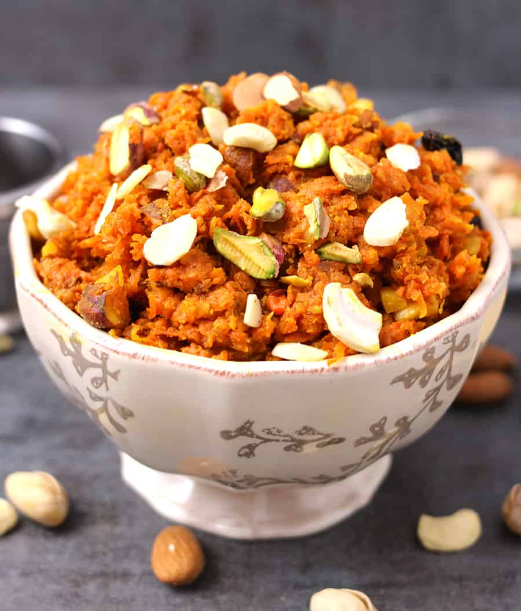

Gajar Ka Halwa | Carrot Halwa

About the recipe
Try this recipe if you want to know how to make traditional Indian gajar ka halwa, or carrot halwa. This is the 'old school' method that uses whole milk, not condensed milk. Ghee can also be used instead of oil for initially cooking the carrots, if desired.
Ingredients
- two tablespoons sunflower seed oil
- two pounds carrots, grated
- one and a half quarts whole milk
- one and a half teaspoons ground cardamom
- two cups white sugar
- half cup raisins
- one pinch saffron threads
- eight tablespoons chopped pistachio nuts
Directions
- Heat oil in a large saucepan over medium heat and add carrots. Cook and stir briefly for about 3 minutes.
- Pour in milk and increase heat; bring to a boil and cook, stirr constantly for 5 minutes.
- Reduce heat to low and simmer gently, uncovered, for about an hour.
- Bring carrot-milk mixture back to a boil.
- Add sugar, raisins, cardamom, and saffron. Cook and stir until mixture has thickened, about 10 minutes.
- Ladle carrot halwa into 8 individual serving dishes. Top each serving with 1 tablespoon pistachios. Serve warm or chill before serving.
Back to Top
Back to main page